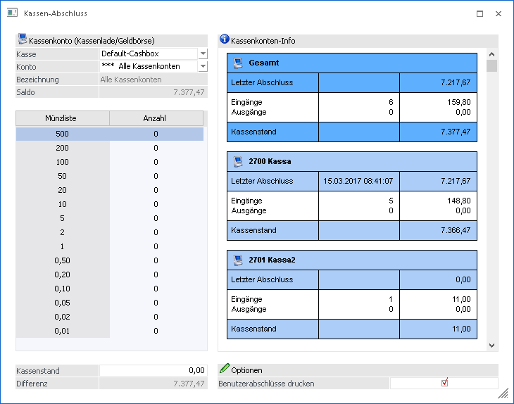

In der WinLine FAKT gibt es den Menüpunkt
1 Abschluss
1 Kassenabschluss
Damit wird für das Kassenkonto ein Tagesabschluss im Originalausdruck durchgeführt.

Ø Kasse
Hier kann gewählt werden, welche Kassen-ID für den Abschluss herangezogen werden soll
Ø Konto
In diesem Auswahlfeld kann entschieden werden, für welches Kassenkonto der Kassen-Abschluss durchgeführt werden soll. Zusätzlich steht die Option "*** Alle Kassenkonten" zur Verfügung um den Kasse-Abschluss für alle Kassenkonten, die mit dieser Kassen-ID in Verbindung stehen, durchzuführen.
Ø Bezeichnung
Die Bezeichnung des Kassenkontos ist hier ersichtlich. Wenn "Alle Kassenkonten" gewählt wird, wird dies ebenfalls hier angezeigt.
Ø Saldo
Hier kann der aktuelle Saldo der gewählten Kassen ermittelt werden.
Ø Kassenstand
Hier kann der aktuelle Kassenstand eingegeben werden. Entweder dieser wird manuell oder mithilfe der Münzliste eingegeben.
Ø Differenz
Es wird die Differenz zwischen aktuellen Saldo des Kassenkontos und der Eingabe des Kassenstands angezeigt. Es wird KEINE Buchung automatisch durchgeführt und dient lediglich zur Anzeige.
Ø Benutzerabschlüsse drucken
Wenn diese Option aktiviert ist, wird zusätzlich zur Gesamtübersicht, eine Auswertung pro Benutzer ausgegeben.
Hinweis:
Beim Öffnen des Menüpunktes wird geprüft, ob im Menüpunkt Kassenstamm bereits eine Kassenidentifikationsnummer und ein FIBU-Konto hinterlegt sind und ob der Benutzer laut Kassenstamm die Berechtigung zur Erstellung von Barfakturen auf der Eingabestation hat. Ein Admin-Benutzer kann den Menüpunkt auch ohne entsprechende Hinterlegung im Kassenstamm aufrufen.
Über die Auswahllistbox "Konto" kann das gewünschte Kassenkonto ausgewählt werden. In dieser Auswahllistbox werden alle Konten angezeigt, für die der Benutzer laut Kassenstamm die Berechtigung hat, für einen Admin werden alle im Kassenstamm verwendeten Kassenkonten angezeigt und ein zusätzlicher Eintrag "alle Kassenkonten".
Nach dem Öffnen des Fensters wird jenes Konto vorgeschlagen, das dem Benutzer und der Eingabestation laut den Einstellungen im Kassenstamm entspricht. Ist für den Benutzer sowohl für die Eingabestation, als auch für "alle Eingabestationen" ein Eintrag vorhanden, wird jener für die aktuelle Eingabestation verwendet. Wenn im gefundenen Benutzer-Eintrag kein Konto eingetragen ist, wird das Default-Konto aus dem Kassenstamm verwendet.
Nach der Auswahl des Kassenkontos werden die Kontobezeichnung und der aktuelle Saldo angezeigt, für den Eintrag "alle Kassenkonten" wird der Saldo der betroffenen Konten aufsummiert und angezeigt.
Für das ausgewählte Konto wird rechts im Fenster eine Kassenkonten-Info angezeigt und beim Wechseln des Kassen-Kontos wird die Information entsprechend aktualisiert. Es werden das Datum und der Saldo des letzten Tagesabschlusses, die Anzahl und Summe von Ein- und Ausgängen seit dem letzten Tagesabschluss und der aktuelle Saldo für das Kassenkonto angezeigt.
Ist der Eintrag "alle Kassenkonten" ausgewählt wird oben eine Summe über alle Kassenkonten angezeigt und darunter die einzelnen Konten-Summen.
Hinweis:
In diesen Summen werden die Buchungen aller berechtigten Benutzer berücksichtigt, eine eventuelle Selektion hat hier keine Auswirkung.
Für den IST-Kassenstand steht eine "Münzliste" oder alternativ ein Eingabefeld zur Verfügung. Damit kann überprüft werden, ob der IST-Kassenstand mit dem Saldo des Kassenkontos übereinstimmt. In der Münzlisten-Tabelle kann für jeden Schein/jede Münze die Anzahl der in der Kassenlade bzw. Geldbörse vorhandenen Stück eingetragen werden.
Mit dem OK-Button wird der Tagesabschluss durchgeführt, damit wird für das selektierte Kassenkonto oder für "alle Kassenkonto" eine Auswertung auf den Drucker ausgegeben. Dabei werden alle Buchungen seit dem letzten Tagesabschluss des Kassenkontos berücksichtigt.
Es wird eine Seite mit der Gesamtübersicht und je nach Einstellung, zusätzlich pro Benutzer eine eigene Seite mit den Auswertungen gedruckt.
Zusätzlich werden auch verwendete Zahlungsarten der Option "3 - Zielrechnung" angezeigt, sofern aus den daraus erzeugt Lieferscheinen noch keine Rechnung erzeugt wurde.